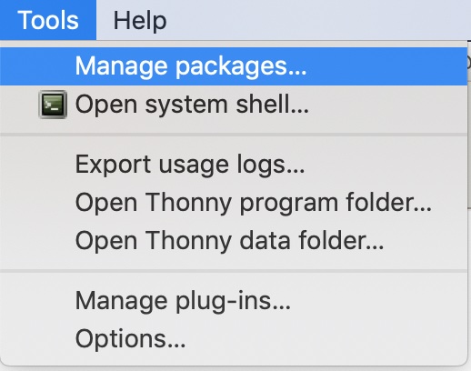
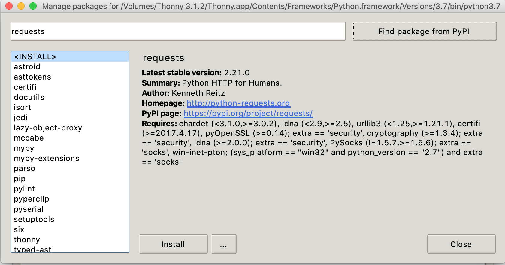

8 Regular Expressions in Python
8.1 Getting your python environment working
To experiment with regular expressions in python, you will need access to
python 3 and the requests module.
If you don’t already have python running on your machine,
here are some options.
8.1.1 repl.it
This python-in-a-browser seems able to do what we need (based on minimal testing)
8.1.2 Thonny
If you prefer to install a simple versions of python locally, try Thonny.
Download and install Thonny from https://thonny.org/.
Make sure the
requestsmodule is available.In Thonny, you can install packages from the tools > manage packages menu:

Then search PyPI for
requestsand hit install.
8.1.3 Testing your python setup
If you can run the following and get the same output, you should be OK.
import re
import requests
# Download St. Augustine’s confessions from CCEL and print it
url = 'https://www.ccel.org/ccel/augustine/confess.txt'
r = requests.get(url)
book = r.text
print(len(book))## 27048## l-scale=1.0" />
##
## <link rel="search" type="application/opensearchdescription+xml"
## title="CCEL" href="/## <re.Match object; span=(11254, 11257), match='aug'>